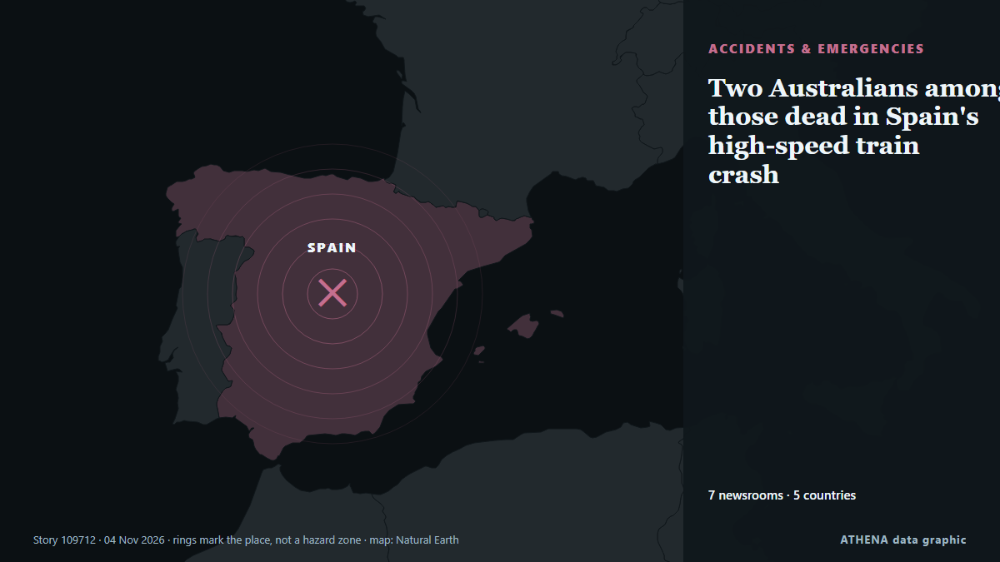

Δυστυχήματα & έκτακτες ανάγκες
| 22 Οκτ | 0 |
|---|---|
| 23 Οκτ | 1 |
| 24 Οκτ | 0 |
| 25 Οκτ | 0 |
| 26 Οκτ | 0 |
| 27 Οκτ | 0 |
| 28 Οκτ | 1 |
| 29 Οκτ | 1 |
| 30 Οκτ | 2 |
| 31 Οκτ | 3 |
| 1 Νοε | 6 |
| 2 Νοε | 5 |
| 3 Νοε | 5 |
| 4 Νοε | 0 |
Οι τίτλοι των ειδήσεων παρουσιάζονται στα αγγλικά, όπως δημοσιεύτηκαν.

Two Australians among those dead in Spain's high-speed train crash
Spain's transport minister has resigned after the crash, as calls mount for accountability. από SBS News
Spanish authorities identify all 69 victims of train crash, including 2 Japanese nationals
The victims include 54 Spanish nationals and 15 foreigners. από The Straits Times
Tenerife striker Jesús de Miguel dies aged 30 after on-field collision
By Domprey Amewornu Davidson Spanish football club CD Tenerife has confirmed the death of striker Jesús de Miguel, who passed away on Tuesday morning after suffering a serious injury during the… από GBC Ghana Online
Helicopters collide below Mount Everest base camp, killing 1 person and injuring 2
Two helicopters collided near Mount Everest’s base camp, resulting in one fatality and two injuries. από Arab News
2 foreign nationals die of suspected electrocution in Bengaluru 5-star hotel’s pool
On Friday evening, two foreign nationals from Germany and Slovakia died from suspected electrocution in a hotel swimming pool. από Times of India
New Zealand vs India: Devon Conway ruled out of 1st ODI after training collision with Henry
New Zealand skipper Santner indicated that Tim Seifert, the back-up batter in the squad, would be a direct replacement for Conway. από Sportstar
Pilot's chilling last words as jet crashes to ground in Florida, killing nine
The pilot could be heard screaming as she spoke to air traffic control about the situation. από Chronicle Live (Newcastle)
Five teenagers stabbed at Halloween party
Five teenagers have been seriously injured after being stabbed at a Halloween party, police have said. από MyJoyOnline
Russian attack sparks fire at transport infrastructure facility in Kropyvnytskyi
Firefighters in Kropyvnytskyi have extinguished a fire at a transport infrastructure facility caused by a Russian attack. από Ukrinform (English)
Bahamas-Bound Jet Crashes in Florida, 9 Dead
A USD$2 million business jet carrying nine people has crashed in Florida. από Sydney Morning Herald
German ministers vow tough response to Frankfurt riots and looting
FRANKFURT/PEISSENBERG, Germany, Nov 1 - German ministers threatened tough penalties for looters and rioters who damaged stores and injured more than 100 police officers in Frankfurt overnight, while… από The Straits Times
Plaka Explosion: How a Copper Pipe Theft Led to Six Deaths
Security footage has helped investigators reconstruct the movements of three suspects accused of stealing a gas pipe from an Athens building, triggering a leak that led to a devastating explosion… από to vima
'Mayday, mayday': Chilling final cockpit calls before 9 die in Florida jet crash
KUALA LUMPUR: “Mayday, mayday” and “We’re going to crash into the ground” were among the last words heard from the cockpit of a private jet before it plunged into a residential area in Palm Beach… από New Straits Times
One dead, three rescued in Lagos building collapse
The Lagos State Emergency Management Agency (LASEMA) has confirmed one death and the rescue of three adult males following the collapse of a two-storey building under construction in Fadeyi, Lagos. από Vanguard
Melbourne Cup weekend crashes on Victorian roads leave eight people dead
According to the Transport Accident Commission, 220 lives have been lost on Victorian roads so far this year. από ABC News Australia
Nigerian families and survivors seek justice over miners' deaths
MINNA, Nigeria, Oct 30 - Families of 37 artisinal miners who died in custody in Nigeria want swift justice and the return of property seized during their arrest, saying no financial compensation will… από The Straits Times
Multiple shootings on Halloween leaves 4 dead, 15 injured
At least 3 victims remain in critical condition following shooting at Fairfield mall, as police search for suspect. από Express Tribune
Strike at industrial complex in Saudi Arabia's Dammam causes huge fire: Iranian state media
TEHRAN, Nov. 01 (MNA) – A major fire erupted at an industrial facility in Dammam, eastern Saudi Arabia, following a reported Yemeni attack. από Mehr News (English)
Spanish village gathers for memorial Mass for train crash victims
Investigators are looking into the cause of one of Europe's deadliest rail disasters this century. από CNA (Channel NewsAsia)